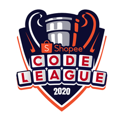

DSWD Day Care Center (Day Care)
DSWD Day Care Center (Day Care)
• DSWD Daycare Student Batch 2005 - 2006
|
 Academia De San Antonio (Preparatory)
Academia De San Antonio (Preparatory)
• Academia De San Antonio Preparatory Student Batch 2006 - 2007
• Most Cooperative Student Of Academia De San Antonio 2006 - 2007 Preparatory Students
• Most Courteous Student Of Academia De San Antonio 2006 - 2007 Preparatory Students
|
Academia De San Antonio (Elementary)
• Academia de San Antonio Elementary Batch 2013 2nd Honor
• Academia de San Antonio Elementary Batch 2013 Best In Hekasi
• Academia de San Antonio Elementary Batch 2013 Most Behave Student
• Academia de San Antonio Elementary Batch 2013 Most Honest Student
• 2X Gov.Suarez Excellence Awardee, 2012 & 2013
• SGG Auditor 2010 - 2011
• Boy Scout 2009 - 2012
• Third Honor Of Academia De San Antonio 2007 - 2008 Grade I Students
• Best In Filipino Of Academia De San Antonio 2007 - 2008 Grade I Students
• Most Responsible Student Of Academia De San Antonio 2007 - 2008 Grade I Students
• 6th Place In 2007 Academia De San Antonio Buwan Ng Wika Pagtula
• Escort In 2008 Academia De San Antonio Search For Ms.Sports Festival
• Second Honor Of Academia De San Antonio 2008 - 2009 Grade II Students
• Best In Math Of Academia De San Antonio 2008 - 2009 Grade II Students
• Most Cooperative Student Of Academia De San Antonio 2008 - 2009 Grade II Students
• Most Responsible Student Of Academia De San Antonio 2008 - 2009 Grade II Students
• Champion In 2008 Academia De San Antonio Mathematics School Quiz Bee
• Second Honor Of Academia De San Antonio 2009 - 2010 Grade III Students
• Most Behave Student Of Academia De San Antonio 2009 - 2010 Grade III Students
• Most Responsible Student Of Academia De San Antonio 2009 - 2010 Grade III Students
• Most Cooperative Student Of Academia De San Antonio 2009 - 2010 Grade III Students
• Academia de San Antonio Mr.Pogi 2009
• 3rd Place In 2009 Academia De San Antonio Nutrition Month Poster Making Contest
• 2nd Place In 2009 Academia De San Antonio Filipino School Quiz Bee
• Champion In 2009 Academia De San Antonio Sibika School Quiz Bee
• 3rd Place In 2009 Academia De San Antonio Language & Spelling Quiz Bee
• Second Honor Of Academia De San Antonio 2010 - 2011 Grade IV Students
• Best In Filipino Of Academia De San Antonio 2010 - 2011 Grade IV Students
• Most Behaved Student Of Academia De San Antonio 2010 - 2011 Grade IV Students
• Champion In 2010 Academia De San Antonio Hekasi School Quiz Bee
• Participant Of 2010 Hekasi Team Congressional Quiz Bee
• Participant Of 2011 Search For Mr.Academia
• Second Honor Of Academia De San Antonio 2011 - 2012 Grade V Students
• Best In English Of Academia De San Antonio 2011 - 2012 Grade V Students
• Most Behaved Student Of Academia De San Antonio 2011 - 2012 Grade V Students
• Most Responsible Student Of Academia De San Antonio 2011 - 2012 Grade V Students
• 2nd Place In 2011 Academia De San Antonio Nutrition Month Poster Making Contest
• Champion In 2011 Academia De San Antonio Science School Quiz Bee
• 4th Place In The Hekasi V 2011 Division Super Quiz Bee
• Winner Of 2012 Academia De San Antonio Nutrition Month Poster Making Contest
• 1st Place In 2012 Academia De San Antonio Filipino School Quiz Bee
• 2nd Place In 2012 Academia De San Antonio Hekasi School Quiz Bee
• 6th Place In The Hekasi VI 2012 Division Super Quiz Bee
|
Manuel S. Enverga Institute Foundation Inc. San Antonio (Junior High School)
• MSEIFI-SA J.H. Batch 2017 With Honors, 8Th Overall
• MSEIFI-SA J.H. Batch 2017 Highest Performing Student In NCAE
• MSEIFI-SA J.H. Batch 2017 Topnocher In The NCAE In HUMSS
• MSEIFI-SA J.H. Batch 2017 Topnocher In The NCAE In Visual Manipulative Skills
• MSEIFI-SA J.H. Batch 2017 Topnocher In The NCAE In Scientific Ability
• MSEIFI-SA J.H. Batch 2017 Best In Computer
• MSEIFI-SA Grade X-Bonifacio Batch 2017 Best In Computer
• MSEIFI-SA Grade X-Bonifacio Batch 2017 Best In Math
• MSEIFI-SA The Finder 2017 Editor In Chief
• Envergasanantonio.000webhostapp.сom Co-Developer
• District Training For School Paper Advisers & Campus Journalist 2015 Participant
• Bowling Green Organization 2013 - 2015 , 2016 - 2017
• Journalism Club 2014 - 2017
• Red Fisher Organization 2015 - 2016
• Academic Club 2016 - 2017
• With Honors Of MSEIFI-SA 2013 - 2014 Grade VII Students, 5Th Overall
• Participant Of MSEIFI-SA Amazing Race Sci-Math 2013
• Achiever Of MSEIFI-SA 2014 - 2015 Grade VIII Students, 10Th Overall
• Winner Of MSEIFI-SA Nutri-Essay 2014
• Participant Of 2014 MSEIFI-SA Sci-Math Tangrams
• Participant Of 2014 UP Oroquieta Photo Essay
• With Honors Of MSEIFI-SA 2015 - 2016 Grade IX Students, 8Th Overall
• Contributor Of MSEIFI-SA Buwan Ng Wika 2015 Champion In Slogan Writing Contest
• 2nd Place In MSEIFI-SA Poem Writing, Book Week 2015
• Participant Of 2015 UP Oroquieta Photo Essay
• Participant Of 2016 Agham Science Mind & Pioneers Quiz Bee
• 2nd Place In MSEIFI-SA Science Quiz Bee Sci-Math 2016
• Participant Of MSEIFI-SA 58Th Foundation Essay
|
STI College/Academic Center Lipa (Senior High School)
• STI College/Academic Center Lipa S.H. Batch 2019 With Honors, 22nd Overall
• STI College Lipa IT Club 2017 - 2018
• STI College Lipa English Club 2017 - 2018
• STI College Lipa Silver Stallions 2018
• STI College/Academic Center Lipa Circle Of United IT Students 2018 - 2019
• STI Academic Center Lipa Team Lancelot 2019
• STI College/Academic Center Lipa CIRCUITS Index 2018 - 2019, Representative
• With Honors Of STI College Lipa 2017 - 2018 Grade XI Tech-Voc ICT Students
• Champion Of STI College Lipa Pagsulat ng Tula, Buwan ng Wika 2017
• Champion Of STI College Lipa Codefest, Tagisan ng Talino 2018
• Champion Of STI Cluster 4 Codefest, Tagisan ng Talino 2018
• 1st Runner Up Of STI National Level Codefest, Tagisan ng Talino 2018
• Participant Of STI College Lipa Pagsulat ng Sanaysay, Buwan ng Wika 2018
• Writer Of Mema: Piece Used By STI Lipa Buwan Ng Wika 2018 Spoken Word Champion
• Participant Of Digital Short Movie Student Category National Digital Arts Awards 2018
• 2nd Runner Up Of STI Academic Center Lipa Director's Cut, Tagisan ng Sining 2019
• Champion Of STI Academic Center Lipa Codefest, Tagisan ng Talino 2019
• 2nd Runner Up Of STI Cluster 4 Codefest, Tagisan ng Talino 2019
• Developer Of STI Academic Center Lipa Most Functional App Of The Year SHS EXPO 2019
• Inventor Of STI Academic Center Lipa 3rd Most Innovative Product SHS EXPO 2019
|
STI Academic Center Lipa (College)
• STI Academic Center BSCpE Student
• STI Academic Center Lipa SSC Officers 2019 - 2020, Representative
• STI Academic Center Lipa Bleed Green Lannister 2020
• Champion Of STI Academic Center Lipa Codefest, Tagisan ng Talino 2020
• 1st Runner Up Of Of STI Cluster 4 Codefest, Tagisan ng Talino 2020
|
Nissan Lipa (Work Immersion)
• Work Immersion Student / Parts Department
|
 RapType Battle Online (Battle Rap)
RapType Battle Online (Battle Rap)
• RBO 2K17 Semifinalist
• RapType Battle Rapper 20 Wins - 3 Losses
|
 PTTC Global MSME Academy Youth Entrepreneurship Bootcamp
PTTC Global MSME Academy Youth Entrepreneurship Bootcamp
• Best Pitching Idea 2019
|
Shopee
• Participant Of Shopee Code League 2020
|
 Amazon
Amazon
• Participant Of Build On Philippines 2020
|